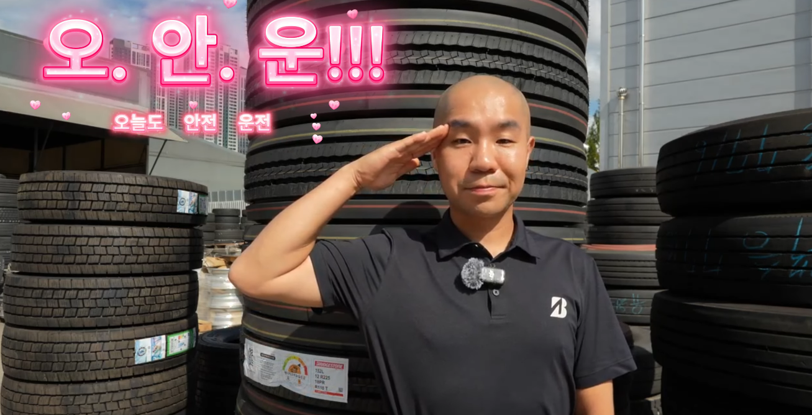
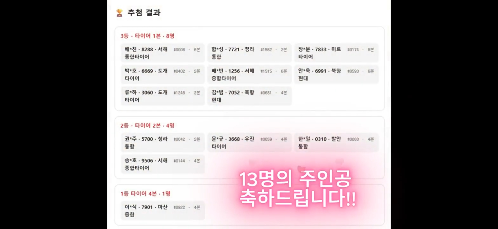
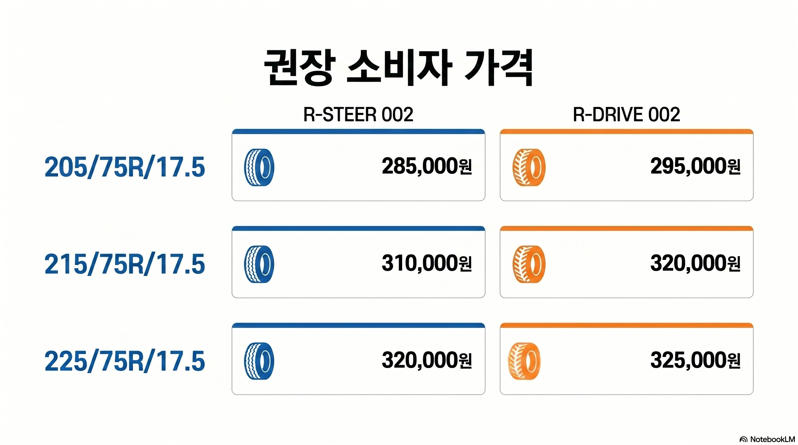

고객과 함께,
오.안.운!
제3회 타또 이벤트 추첨이 성황리에 마무리되었습니다. 이번 호에서는 제2회차 1등 당첨자를 배출한 '북항현대' 배상욱 대표님의 인터뷰와 함께, 마산종합이 1등의 영예를 안은 제3회 타또 당첨 대리점 13곳의 명단, 그리고 외상 미수금 발생 시 부가세를 돌려받는 필수 세무 상식을 전해드립니다.

제2회 타또 1등 명당, 북항현대 인터뷰


인천 북항현대 (배상욱 대표)
"지난 20년간 고객님들과 함께 쌓아온 신뢰에 타또 이벤트라는 좋은 기회가 더해져, 저희 매장을 찾아주신 기사님께 1등 당첨이라는 큰 기쁨을 드릴 수 있었습니다."
- ✔ 제2회 1등 및 제3회 연속 당첨: 2회차 1등(타이어 4본) 배출에 이어, 이번 3회차에서도 3등 당첨자 2명을 연속 배출하는 저력 과시.
- ✔ 20년 전통의 상용차 전문점: 브리지스톤 플릿포인트(Fleet Point) 인천총판으로서 체계적인 타이어 안전 점검과 책임 정비 실현.
"북항현대의 사례처럼 한 번 타또 당첨자가 나온 매장에서는 기사님들 사이에 입소문이 퍼져 자발적인 응모와 재방문이 이어집니다. 매장 내 타또 포스터를 잘 보이는 곳에 부착하고 방문 고객께 적극 안내하십시오."
제3회 타또 추첨 결과 (1등 마산종합!)

🎉 제3회 타또 당첨 대리점 (총 13명)
-
▶
1등 - 타이어 4본 (1명) 마산종합 (1명)
-
▶
2등 - 타이어 2본 (4명) 청라통합 (1명), 우진타이어 (1명), 발안통합 (1명), 서해종합타이어 (1명)
-
▶
3등 - 타이어 1본 (8명) 서해종합타이어 (2명), 도개타이어 (2명), 북항현대 (2명), 청라통합 (1명), 미르타이어 (1명)

타이어 권장 소비자 가격표 안내

못 받은 타이어 외상 미수금, 이미 낸 부가세 10%라도 돌려받으세요!
상용차 타이어 매장 특성상 세금계산서를 먼저 발행해주고 외상 거래를 하는 경우가 많습니다. 만약 거래처 부도나 연락 두절로 외상값을 끝내 받지 못하게 되었다면, 이미 국세청에 납부한 부가가치세 10%를 전액 환급(차감)해 주는 '대손세액공제(부가가치세법 제45조)' 제도를 반드시 활용하셔야 합니다.
반드시 챙겨야 할 핵심 요건
- 1. 공제 대상: 세금계산서를 정상 발행한 외상매출금 중 거래처의 파산·폐업·부도 발생일로부터 6개월 이상 경과했거나, 상법상 소멸시효(물품대금 3년)가 완성되어 회수 불능이 확정된 미수금.
- 2. 공제 기한: 대손이 확정된 날이 속하는 과세기간의 확정신고 시 신청 가능하며, 타이어 공급일로부터 10년이 지난 날이 속하는 확정신고 기한까지 인정됩니다.
- 3. 필수 서류: 당초 발행한 세금계산서 내역과 함께 부도확인원, 폐업사실증명원 또는 내용증명 우편 등 채권 회수를 위해 노력했으나 회수하지 못했음을 입증하는 증빙을 세무대리인에게 전달하십시오.
국세청 홈택스(hometax.go.kr) 이동
상용차 업계 최신 동향 및 세일즈 포인트
물동량과 따로 가는 트럭 시장…신차 판매량 3년 새 30%대 감소
항만(+11.4%)·택배(+52.4%) 물동량은 늘었지만, 낮은 운임과 높은 차량 가격·금융비용 탓에 준중형 이상 신차 판매는 3년 새 34.5% 급감하고 10년 이상 노후차 비중이 44%(18만 대↑)로 늘었습니다.
올 9월 트럭 시장, 전년 동월 대비 24.3% 뒷걸음질
9월 준중형 이상 트럭 판매가 1,712대로 전년 동월 대비 24.3% 감소(1~9월 누적 21.4%↓)했습니다. 카고와 믹서(-50%)가 부진한 반면, 트랙터(전월비 +36.7%)와 덤프(전년비 +5.8%)는 반등했습니다.
마력보다 질긴 마일리지 전쟁…5대 ‘TBR 타이어’ 열전
TCO(총소유비용)를 좌우하는 5대 TBR 브랜드 비교에서 브리지스톤은 합리적인 가격대와 압도적인 케이싱 견고성으로 험로·덤프에 강하며, 밴닥(Bandag) 재생 효율이 뛰어난 브랜드로 꼽혔습니다.
2030년 운전자 26% 부족…마스오토가 그리는 자율주행 화물망 비전
화물차 기사 고령화(50대 이상 62.2%)로 인한 인력난 대안으로 카메라 기반 자율주행 트럭이 부상하고 있으며, 고속도로 정속 주행을 통해 연료효율을 12% 높이는 성과를 내고 있습니다.
사장님, 깊어가는 가을에도 늘 응원합니다!
제3회 타또 이벤트까지 뜨거운 관심과 참여로 함께해 주신 전국 대리점 사장님들께 진심으로 감사드립니다. 당첨의 기쁨을 누린 매장의 생생한 에너지가 모든 대리점의 매출 활력으로 이어지길 기원합니다.
본격적인 겨울철 성수기를 앞두고 매장 안전과 건강 관리에 각별히 유의하시고, 오늘도 고객과 함께 '오.안.운(오늘도 안전운전)' 하십시오. 현장에서 필요하신 지원이 있다면 언제든 말씀해 주시기 바랍니다. 감사합니다.